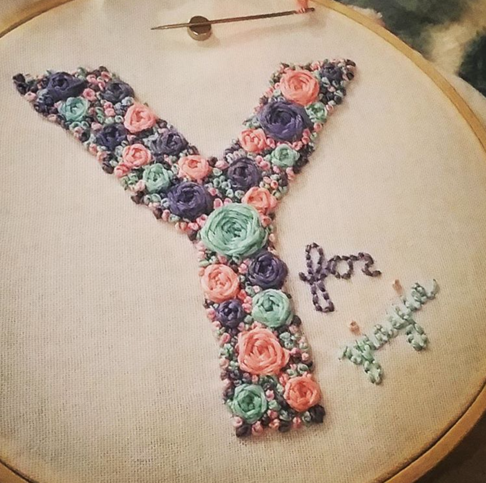
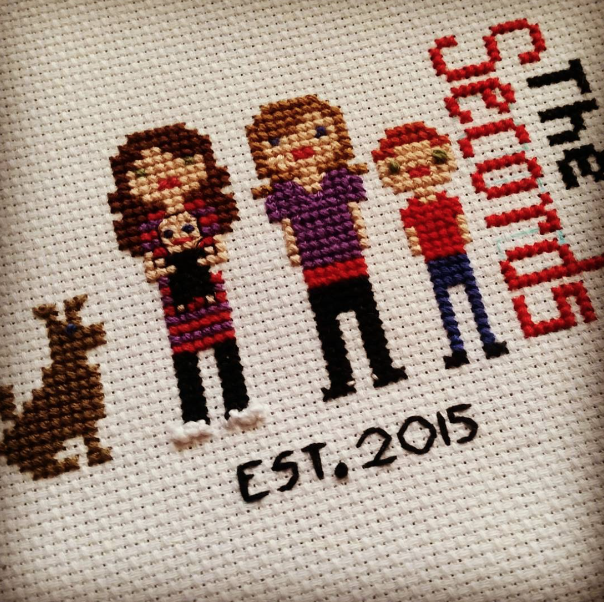
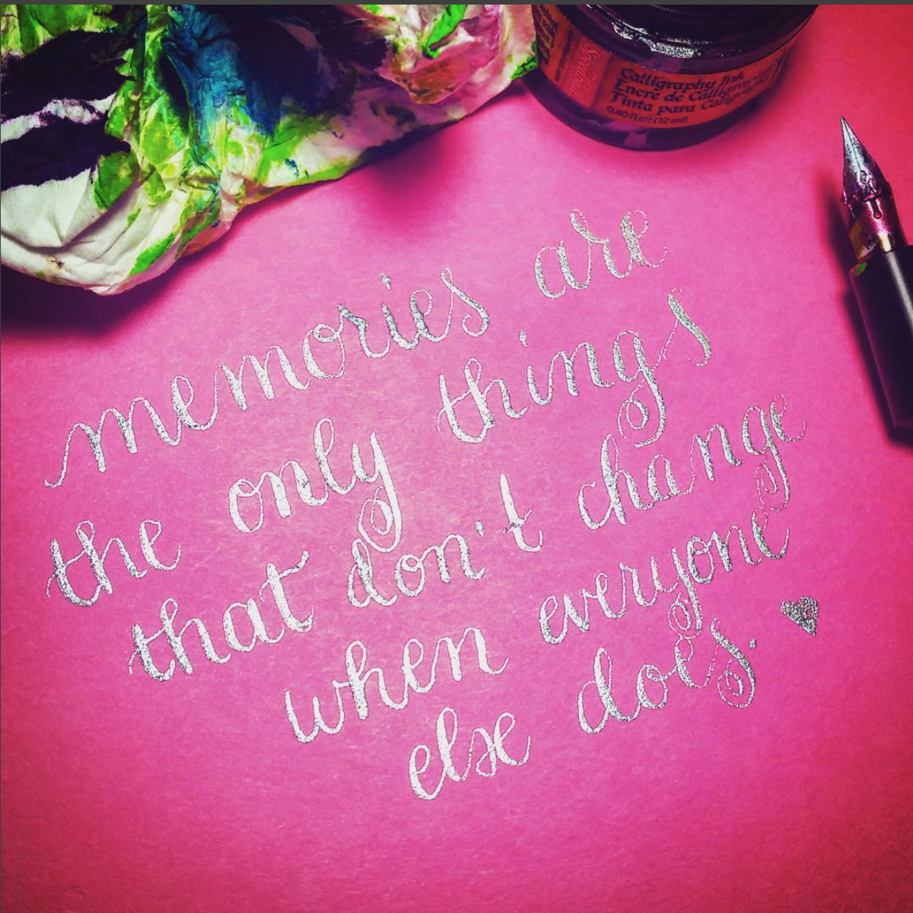
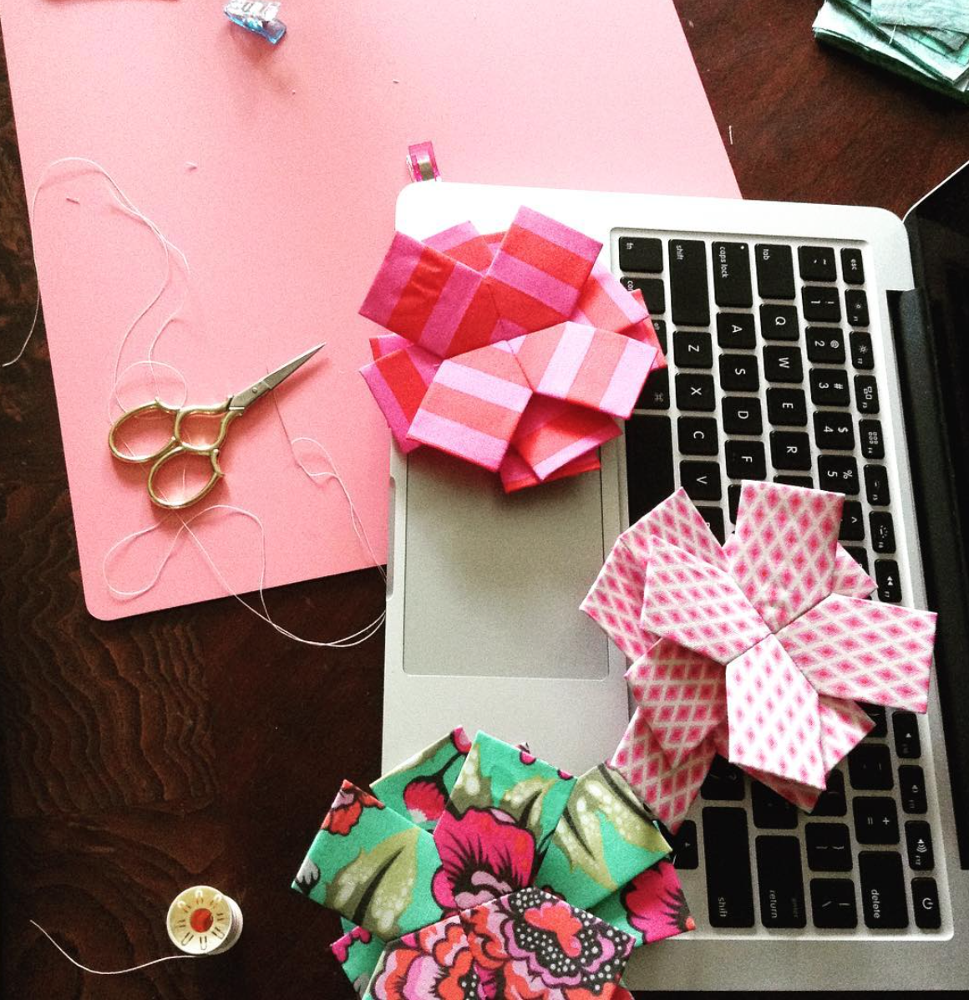

Creating is a passion of mine.
Below you can learn more about each of these hobbies
Item |
Supplies Needed |
|---|---|
|  |
Hand Embroidery
wooden hooppatternaurifil threadembroidery needlebroadcloth fabricembroidery scissors |
|  |
Cross Stitch
plastic hooppatterncotton threadtapestry needlecross stitch fabricembroidery scissors |
|  |
Hand Lettering
calligraphy nibliquid acrylicliquid watercoloroblique penholderindia inkbristol pad |
|  |
Hand Quilting
epp piecesquilting fabricaurifil threadquilting needlebattingembroidery scissors |